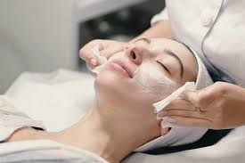
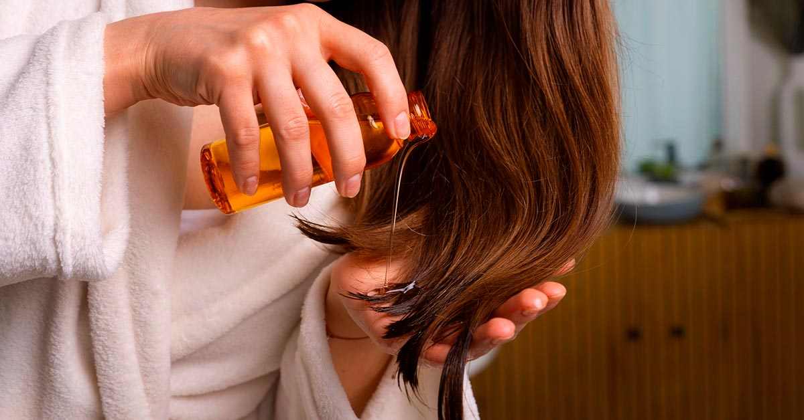

JAIBA BEAUTYJAIBA BEAUTY
JAIBA BEAUTYJAIBA BEAUTY |
 |
 |
|---|
CONSEJOS DE BELLEZA
¿Quieres lucir radiante y sentirte increíble en tu propia piel? La belleza no se trata solo de productos caros o tendencias pasajeras, sino de encontrar lo que funciona para ti y resalta tu esencia única. En este espacio, te compartiré consejos prácticos, sencillos y efectivos para cuidar tu piel, cabello y bienestar general, ¡todo adaptado a tu estilo de vida! Prepárate para descubrir trucos que te harán brillar desde adentro hacia afuera.
Hidratación es clave: Recomienda beber al menos 2 litros de agua al día para mantener la piel radiante y el cuerpo saludable. Puedes añadir que una piel bien hidratada luce más joven y elástica.

Rutina básica de cuidado facial: Sugiere una rutina simple: limpiar el rostro dos veces al día, usar un tónico para equilibrar la piel, aplicar un sérum según las necesidades (como vitamina C para luminosidad) y terminar con una crema hidratante con protección solar durante el día.
Protección solar diaria: Explica que usar protector solar SPF 30 o más, incluso en días nublados, previene el envejecimiento prematuro y protege contra manchas.
Exfoliación suave: Aconseja exfoliar la piel 1-2 veces por semana para eliminar células muertas, pero sin exagerar para no irritarla. Puedes mencionar opciones naturales como una mezcla de miel y azúcar.

Descanso y belleza: Resalta la importancia de dormir 7-8 horas diarias. Un buen descanso reduce ojeras, mejora el tono de la piel y da un brillo natural.

Alimentación para la piel: Propón incluir alimentos ricos en antioxidantes como frutas (arándanos, naranjas), verduras (espinacas, zanahorias) y frutos secos (almendras) para nutrir la piel desde adentro.
Menos es más en maquillaje: Sugiere usar productos ligeros como BB creams o bases con cobertura natural para dejar que la piel respire, y no olvidar desmaquillarse siempre antes de dormir.
Cuidado del cabello: Recomienda usar un champú sin sulfatos, aplicar acondicionador en las puntas y evitar el calor excesivo de planchas o secadores. Un tip extra: un masaje con aceite de coco una vez por semana para hidratar.
